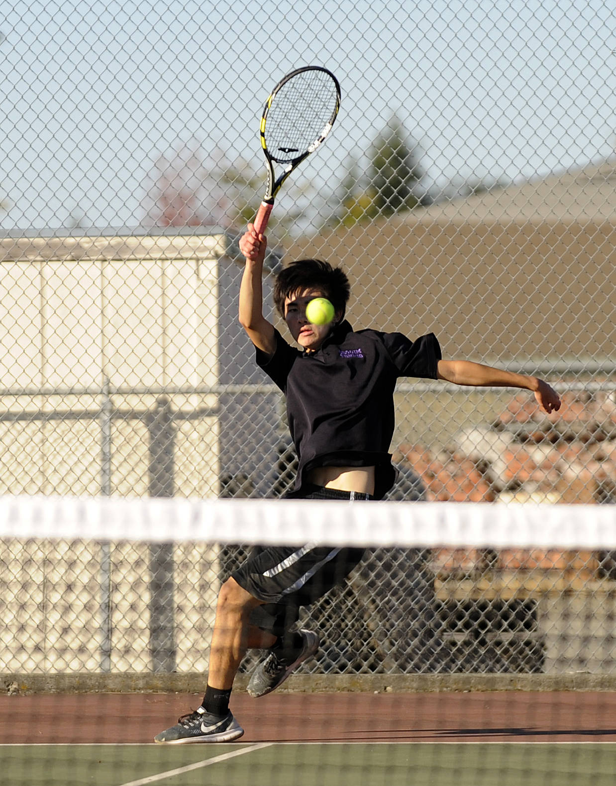
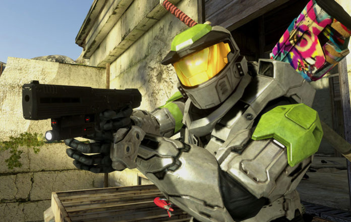
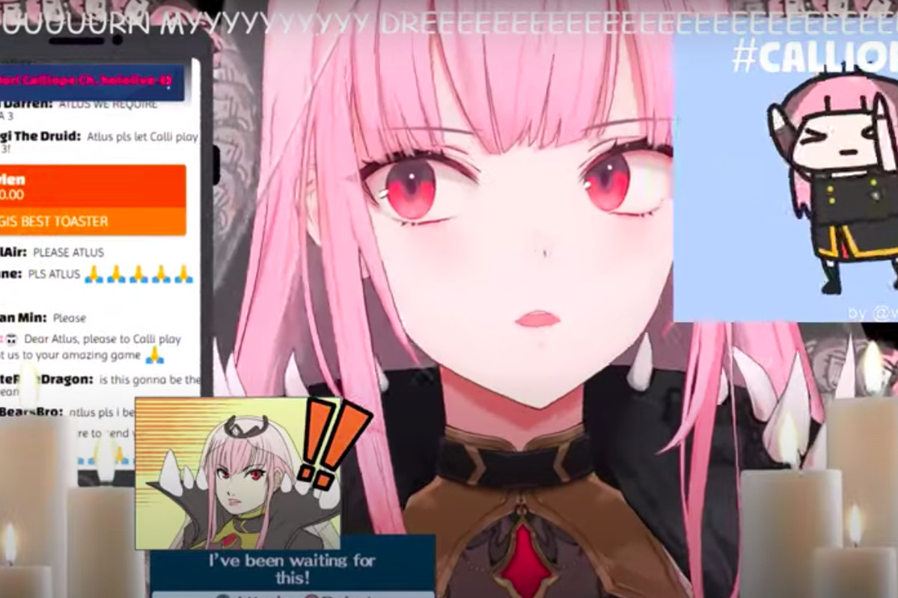
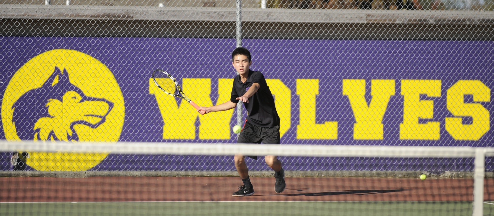

(CENTERED)RAYMOND LAM ON THAT TENNIS GRIND!!!!!
My Ambition
I have the potential to create positive change mainly in the area of science and technology through the classes that I will be taking in college and using that knowledge to grow in my career. Through work and volunteering in my community I will be able to make a difference in people's lives. I am a well-rounded student that strives hard to achieve success and set high expectations. I believe my leadership qualities enhance my ability to demonstrate to my peers my creativity and scientific knowledge.

My Tennis Experience
It was a great experience teaching tennis skill
for younger kids! I enjoyed showing them my
techniques to play advanced tennis and be
consistent rallying across the net.
The last year of my Tennis Academy experience
was a year to never forget. I would remember all
the great memories I had on the court from past
academies. The last year of my Tennis Academy experience
was a year to never forget. I would remember all
the great memories I had on the court from past
academies. I would never forget the coaches, friends,
and members who put all their hard work into setting
up this event.

THIS IS ABOUT ME!
My name is Raymond W. Lam and my plan is to earn a Bachelors of Arts degree in Public Health. Also, my plan is to apply to the major in the sophomore year winter quarter. My goal is to do research in the health care field where I can study diseases and injuries that affect local communities in Washington State. I hope to work in a health care setting where I could advocate for health promotion, collaborate with medical experts in health organizations, and address awareness to global health threats by managing local programs.

One more unique CSS command that was not discussed in the workshop is that I changed my dotted border color to orange, changed the letter spacing to 2px, and changed the font size to 120% in "My Tennis Experience"

^^^ A PHOTO WITH 20 PIXEL MARGIN ON EACH SIDE ^^^
Both of my grandparents on my dad’s and mom’s side of the family immigrated from China into the United States of America.
At a young age, technology had surrounded me for many years. I love to interact, communicate, and learn any technology I used. With my first computer I downloaded multiple types of software, applications, and programs that caught my interest and learned everything that a computer can do.
The Rounded Border element
LOOK AT THESE BORDERS! WOW SO ROUND!
Rounded corners!
My floating Element Box